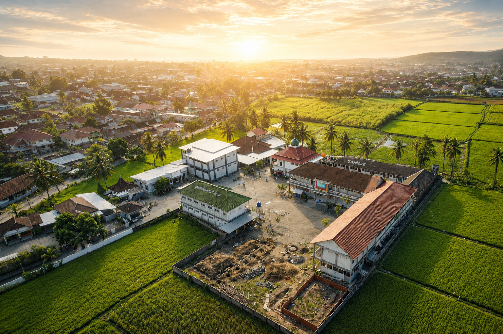
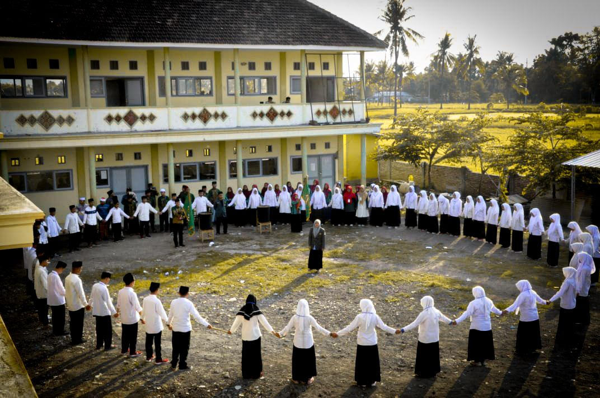
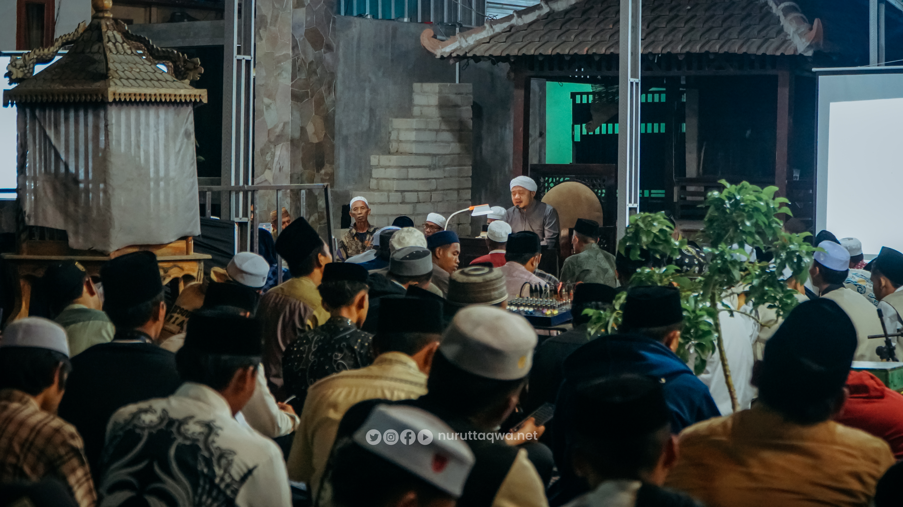
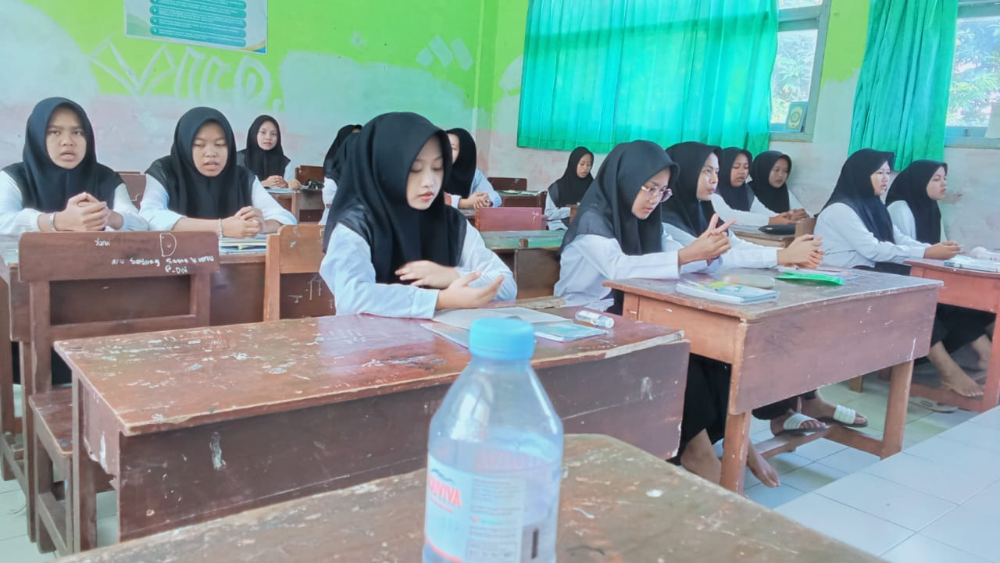

Madrasah Diniyah & Kajian Kitab Kuning
PENDIDIKAN AGAMA
Berdiri sejak 1979 | Jenjang Ula & Wustho
Pembelajaran kitab turats meliputi fiqh, tauhid, tasawuf, serta gramatika bahasa Arab untuk membentuk santri yang berilmu dan berakhlak.
Selengkapnya
PROFIL & SEJARAH | Grujugan, Cermee, Bondowoso | Jl. Raya Cermee No. 09
Terletak di Desa Grujugan, Kecamatan Cermee, Kabupaten Bondowoso, Pondok Pesantren Nurut Taqwa hadir di tengah suasana pedesaan yang sejuk dan hamparan sawah untuk menjawab kebutuhan masyarakat akan ilmu agama. Didirikan dan diasuh oleh KH. Ma'shum Zainullah, pesantren ini berkomitmen mencetak santri yang berilmu agama, berakhlakul karimah, dan bermanfaat bagi umat.

Cikal bakal pesantren ini berawal dari amanah masyarakat kepada Ust. Nur Sahwi (KH. Ma'shum Zainullah) untuk menghidupkan shalat berjamaah di Masjid Nurut Taqwa. Pada tahun 1976, santri pertama bernama Babun Rusydi datang berguru, disusul santri mukim pertama bernama Abdul Ghoni dari Desa Ramban Wetan. Tahun 1976 inilah yang kemudian ditetapkan sebagai tahun berdirinya Pondok Pesantren Nurut Taqwa.
Dalam mengembangkan dakwah, beliau bersama Pak Sunarmi membentuk majelis sholawat, pengajian, dan manaqiban di desa-desa sekitar Cermee dan Prajekan, lalu mendirikan Madrasah Diniyah pada tahun 1979. Kepercayaan masyarakat terus tumbuh hingga santri datang tidak hanya dari Bondowoso, tetapi juga dari Situbondo, Jember, Banyuwangi, Madura, dan Bali.

Secara filosofis, nama "Nurut Taqwa" berarti sinar ketaqwaan, dengan harapan para santri dan alumni mampu menebarkan cahaya keimanan di tengah masyarakat. Pesantren ini berhaluan Ahlussunnah Wal Jamaah bermadzhab Syafi'i yang memadukan kajian kitab-kitab klasik (turats) dengan pendidikan modern.
Kajian kitab meliputi bidang fiqh, tauhid, tasawuf, dan nahwu sharf seperti Riyadhus Sholihin, Tafsir Jalalain, Fathul Qorib, Alfiyah Ibnu Malik, hingga Al-Jurumiyah. Untuk pendidikan formal, diterapkan kurikulum resmi pemerintah yang dipadukan dengan muatan lokal ke-NU-an dan pemantapan paham Aswaja An-Nahdliyah.

Selain pengajian di masjid dan Madrasah Diniyah (jenjang Ula selama 4 tahun dan Wustho selama 2 tahun), Pondok Pesantren Nurut Taqwa juga mengembangkan lembaga pendidikan formal untuk merespon tuntutan zaman, dimulai dari pendirian MI (1991), MTs (1993), MA (2003), hingga SMK dengan keahlian pertanian pada tahun 2014 untuk membekali santri jiwa kewirausahaan.
Untuk menunjang kompetensi santri secara menyeluruh, pesantren juga mendirikan Lembaga Bahasa Arab (LBA), Lembaga Bahasa Inggris (LBI), Lembaga Bimbingan Membaca Kitab (LBMK), serta Lembaga Tahfidzul Qur'an, disertai kegiatan diklat dan seminar keagamaan.
Dalam menjalankan roda pendidikan dan pengabdian, pengasuh dibantu oleh K.H. Barri Shalawi Zain, M.Si selaku Ketua Yayasan dan K.H. As'ad Nawawi Ma'shum selaku Wakil Ketua Yayasan, bersama jajaran pengurus dan tenaga profesional di bidang pendidikan, sosial, ekonomi, dan organisasi demi memberikan pelayanan terbaik kepada umat.
PENDIDIKAN AGAMA
Berdiri sejak 1979 | Jenjang Ula & Wustho
Pembelajaran kitab turats meliputi fiqh, tauhid, tasawuf, serta gramatika bahasa Arab untuk membentuk santri yang berilmu dan berakhlak.
SelengkapnyaPENDIDIKAN FORMAL
MI, MTs, MA & SMK Nurut Taqwa
Memadukan kurikulum nasional dengan nilai kepesantrenan serta pembekalan keterampilan dan jiwa kewirausahaan bagi para santri.
SelengkapnyaPENGEMBANGAN DIRI
LBA, LBI, LBMK & Tahfidz
Wadah pengembangan kemampuan bahasa Arab, bahasa Inggris, membaca kitab kuning, serta program menghafal Al-Qur'an secara terarah.
Selengkapnya